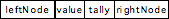
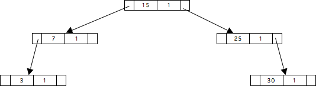
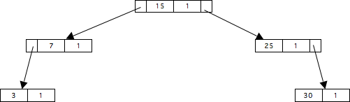
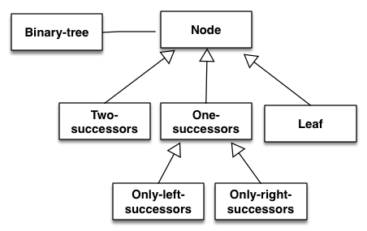

Binärbäume in Clojure-DOSL
Inhaltsverzeichnis
1 Vorbemerkung
Implementierung von Binärbäumen in Anlehnung an die im NA-Arbeitspapier Nr. 2008-4 erläuterten Smalltalk.Implementierung.
Es werden Binärbäume benutzt, deren Einträge einer linearen Ordnung folgen und die in jedem Knoten zu vermerken erlauben, wie oft ein Wert in dem Baum vorkommt. Ein Knoten des Baums hat dann diesen Aufbau: 
Die folgende Abbildung zeigt einen kleinen Baum bestehend aus Knoten dieses Formats. 
2 Implementierung
2.1 Grundsätze
Es gibt vier Arten von Knoten:
- Knoten mit zwei Nachfolgern
- Knoten mit einem linken Nachfolger
- Knoten mit einem rechten Nachfolger
- Knoten mit keinem Nachfolger
Ein Beispiel:  Für jede Knotenart gibt es eine eigene Klasse.
| Knotenart | Klasse |
|---|---|
| Knoten mit zwei Nachfolgern | Two-successors |
| Knoten mit einem linken Nachfolger | Only-left-succ |
| Knoten mit einem rechten Nachfolger | Only-right-succ |
| Knoten mit keinem Nachfolge | Leaf |
Das vereinfachte Klassendiagramm: 
2.2 Programmcode
(ns dosl2clj.binarytree (:require [dosl2clj.core :refer :all] [serializable.fn :as sf])) (declare Only-left-succ Only-right-succ Binary-tree Leaf) ;; Klasse Node - abstrakte Oberklasse für alle Knotenarten ((obj {:value nil :tally nil} {;; Methode zum Hinzufügen eines Eintrags in den Baum :add (fn [newval is-left-from] (if (= (self :value) newval) (self :tally (inc (self :tally))) self)) ;; Methoden für die strukturierte Anzeige eines Baums :toString (fn [] (self :toString-atLevel 0)) :toString-atLevel (fn [lvl] (str "\n" (apply str (repeat lvl "\t")) ((self :class) :class-name) ": " (self :tally) " mal " (self :value))) :noNode-toString-atLevel (fn [lvl] (str "\n" (apply str (repeat lvl "\t")) "---")) ;; Methoden zur Umwanldung einses Baums in eine sortierte Liste :toList (fn [](self :insertInto '())) :insertInto (fn [lst] (concat (repeat (self :tally) (self :value)) lst))}) :kappa 'Node) ;; Klasse Two-successors ((obj {:left-node nil :right-node nil} {;; Methode zum Hinzufügen eines Eintrags in den Baum :add (fn [newval is-left-from] (let [kn (self :super :add newval is-left-from)] (if (= (kn :value) newval) kn (if (is-left-from newval (kn :value)) (self :left-node ((self :left-node) :add newval is-left-from)) (self :right-node ((self :right-node) :add newval is-left-from)))))) ;; Methode für die strukturierte Anzeige eines Baums :toString-atLevel (fn [lvl] (str (self :super :toString-atLevel lvl) ((self :left-node) :toString-atLevel (inc lvl)) ((self :right-node) :toString-atLevel (inc lvl)))) ;; Methode zur Umwanldung einses Baums in eine sortierte Liste :insertInto (fn [lst] ((self :left-node) :insertInto (self :super :insertInto ((self :right-node) :insertInto lst))))}) :kappa 'Two-successors 'Node) (def Two-successors (Two-successors :add-method {;; Klassenmethode für das Erzeugen eines neues Exemplars :new-inst (fn [val tal l-node r-node] (self :new {:value val :tally tal :left-node l-node :right-node r-node}))})) ;;; Klasse Leaf ((obj {} {;; Methode zum Hinzufügen eines Eintrags in den Baum :add (fn [newval is-left-from] (let [kn (self :super :add newval is-left-from)] (if (= (kn :value) newval) kn ((if (is-left-from newval (kn :value)) Only-left-succ Only-right-succ) :new {:value (kn :value) :tally (kn :tally) :next-node (Leaf :new {:value newval :tally 1})}))))}) :kappa 'Leaf 'Node) ;; Klasse One-successor ((obj {:next-node nil} {;; Methode zum Hinzufügen eines Eintrags in den Baum :add-next-node (fn [newval is-left-from] (self :next-node ((self :next-node) :add newval is-left-from)))}) :kappa 'One-successor 'Node) ;; Klasse Only-left-succ ((obj {} {;; Methode zum Hinzufügen eines Eintrags in den Baum :add (fn [newval is-left-from] (let [kn (self :super :add newval is-left-from)] (if (= (kn :value) newval) kn (if (is-left-from newval (kn :value)) (self :add-next-node newval is-left-from) (Two-successors :new-inst (self :value) (self :tally) (self :next-node) (Leaf :new {:value newval :tally 1})))))) ;; Methode für die strukturierte Anzeige eines Baums :toString-atLevel (fn [lvl] (str (self :super :toString-atLevel lvl) ((self :next-node) :toString-atLevel (inc lvl)) (self :noNode-toString-atLevel (inc lvl)))) ;; Methode zur Umwanldung einses Baums in eine sortierte Liste :insertInto (fn [lst] ((self :next-node) :insertInto (self :super :insertInto lst)))}) :kappa 'Only-left-succ 'One-successor) ;; Klasse Only-right-succ ((obj {} {;; Methode zum Hinzufügen eines Eintrags in den Baum :add (fn [newval is-left-from] (let [kn (self :super :add newval is-left-from)] (if (= (kn :value) newval) kn (if (is-left-from newval (kn :value)) (Two-successors :new-inst (self :value) (self :tally) (Leaf :new {:value newval :tally 1}) (self :next-node)) (self :add-next-node newval is-left-from))))) ;; Methode für die strukturierte Anzeige eines Baums :toString-atLevel (fn [lvl] (str (self :super :toString-atLevel lvl) (self :noNode-toString-atLevel (inc lvl)) ((self :next-node) :toString-atLevel (inc lvl)))) ;; Methode zur Umwanldung einses Baums in eine sortierte Liste :insertInto (fn [lst] (self :super :insertInto ((self :next-node) :insertInto lst)))}) :kappa 'Only-right-succ 'One-successor) ;; Klasse Binary-tree ((obj {;; Wurzel des Baums :root nil ;; Funktion, die die Baumordnung bestimmt :compare (fn [x y] (< x y))} {;; Methode zum Hinzufügen eines Eintrags in den Baum :add (fn [value] (if (= (type value) (type ((self :root) :value))) (self :root ((self :root) :add value (self :compare))) self)) ;; Methode für die strukturierte Anzeige eines Baums :toString (fn [] (str ((self :class) :class-name) " mit \n" ((self :root) :toString))) ;; Methode zur Umwanldung einses Baums in eine sortierte Liste :toList (fn [] ((self :root) :toList))}) :kappa 'Binary-tree)
3 Anwendungsbeispiele
(def b0 (Binary-tree :new {:root (Leaf :new {:value 6 :tally 1})} )) ((b0 :add 7) :toString) ;;=> ;; Binary-tree mit ;; Only-right-succ: 1 mal 6 ;; --- ;; Leaf: 1 mal 7 ((b0 :add 7) :toList) ;;=> (6 7) ((((b0 :add 5) :add 3) :root) :toString) ;;=> ;; Only-left-succ: 1 mal 6 ;; Only-left-succ: 1 mal 5 ;; Leaf: 1 mal 3 ;; --- ;; --- (((b0 :add 5) :add 3) :toList) ;;=> (3 5 6) ((((b0 :add 7) :add 3) :add 1) :toList) ;;=> (1 3 6 7) (def b2 (((b0 :add 10) :add 3) :add 1)) (((((b2 :add 9) :add 11) :add 15) :add 3) :toString) ;;=> ;; Binary-tree mit ;; Two-successors: 1 mal 6 ;; Only-left-succ: 2 mal 3 ;; Leaf: 1 mal 1 ;; --- ;; Two-successors: 1 mal 10 ;; Leaf: 1 mal 9 ;; Only-right-succ: 1 mal 11 ;; --- ;; Leaf: 1 mal 15 (((((b2 :add 9) :add 11) :add 15) :add 3) :toList) ;;=> (1 3 3 6 9 10 11 15)